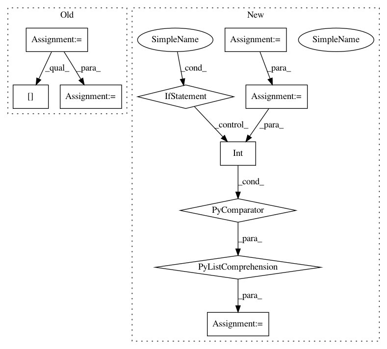

85aabb5014e22659ac722280607a1f4b44e1fb32,tslearn/shapelets.py,ShapeletModel,fit,#ShapeletModel#Any#Any#,380
Before Change
self.d_ = d
if y.ndim == 1 or y.shape[1] == 1:
self.label_binarizer_ = LabelBinarizer().fit(y)
y_ = self.label_binarizer_.transform(y)
self.classes_ = self.label_binarizer_.classes_
else:
y_ = y
self.categorical_y_ = True
self.classes_ = numpy.unique(y)
assert y_.shape[1] != 2, ("Binary classification case, " +
"monodimensional y should be passed.")
if y_.ndim == 1 or y_.shape[1] == 1:
n_classes = 2
else:
n_classes = y_.shape[1]
if self.n_shapelets_per_size is None:
sizes = grabocka_params_to_shapelet_size_dict(n_ts, sz, n_classes,
self.shapelet_length,
After Change
self.label_to_ind_ = None
self.d_ = d
self.classes_ = [int(lab) for lab in set(y)]
n_labels = len(self.classes_)
self.label_to_ind_ = {int(lab): ind
for ind, lab in enumerate(self.classes_)}
y_ind = numpy.array(
[self.label_to_ind_[lab] for lab in y]
)
y_ = to_categorical(y_ind)
if n_labels == 2:
y_ = y_[:, 1:] // Keep only indicator of max index class
In pattern: SUPERPATTERN
Frequency: 3
Non-data size: 10
Instances
Project Name: rtavenar/tslearn
Commit Name: 85aabb5014e22659ac722280607a1f4b44e1fb32
Time: 2020-05-03
Author: romain.tavenard@univ-rennes2.fr
File Name: tslearn/shapelets.py
Class Name: ShapeletModel
Method Name: fit
Project Name: Qiskit/qiskit-aqua
Commit Name: a194557ba754f9b14d473ff9e39a2bc2449e58c1
Time: 2018-07-06
Author: chenrich@us.ibm.com
File Name: qiskit_acqua/ising/maxcut.py
Class Name:
Method Name: sample_most_likely
Project Name: Qiskit/qiskit-aqua
Commit Name: d892fb853c4c296539034d2dbaf304c0d06a357d
Time: 2018-07-06
Author: 34400304+liupibm@users.noreply.github.com
File Name: qiskit_acqua/ising/graphpartition.py
Class Name:
Method Name: sample_most_likely